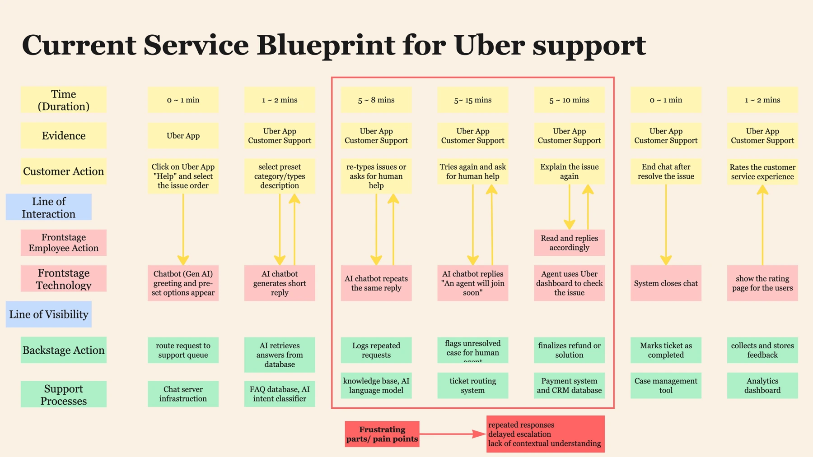
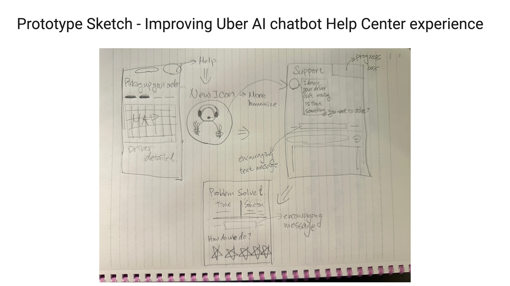
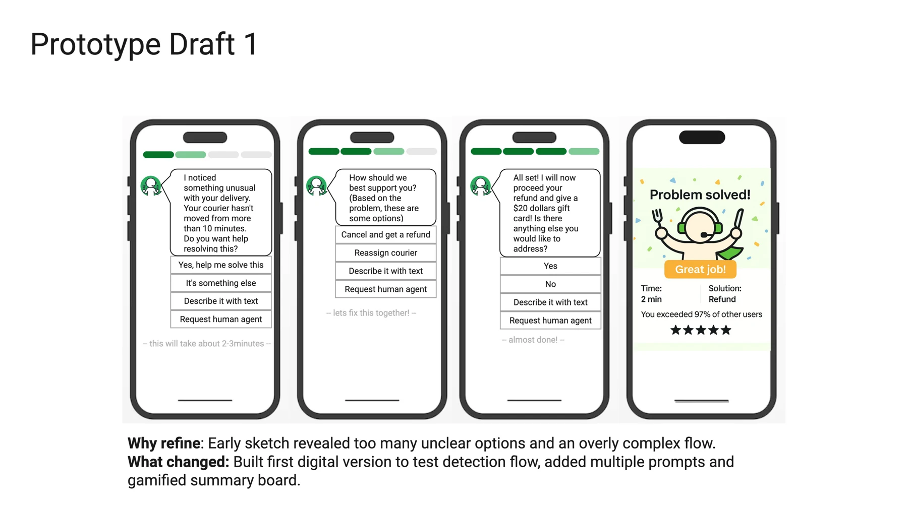
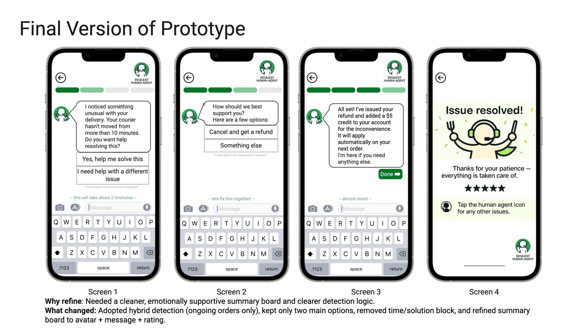

Replies without progress.
Repeated or irrelevant chatbot answers can leave customers feeling unheard, without a useful next step.
Carnegie Mellon · UX research & design · Uber Eats concept
I redesigned an AI support chatbot to help customers understand their options and reach a person without starting over. User interviews with four Uber Eats users framed the problem; usability testing with those participants guided the course prototype’s refinement.
Redesigned
A clearer support flow, from explaining an order problem to reaching a person with the conversation intact.
A delivery problem is already frustrating. Repetitive replies, rigid menus, and an unclear route to a person can make the support experience feel just as difficult as the original issue.
This CMU project began with that gap between automated support and the help customers need. My planning work reviewed complaints about Uber’s chatbot experience; I then interviewed four Uber Eats users to understand their experiences directly.
I focused the design on order-related support, using a delayed delivery as the main scenario. It creates a concrete moment to explore uncertainty, the consequences of canceling, and the transition from AI to human help.
I combined user interviews with a service blueprint to connect customer actions, interface choices, and support processes. Three problems shaped the redesign.
Repeated or irrelevant chatbot answers can leave customers feeling unheard, without a useful next step.
An unclear escalation path leaves customers uncertain about when, or whether, human help is available.
A disconnected handoff asks customers to repeat the issue after they have already spent time explaining it.

I sketched the journey, built a digital prototype, and invited the four interview participants back for usability testing. This connected their feedback to the support frustrations they had described in interviews.
I looked for whether the flow addressed those frustrations and where choices still felt unclear. Their feedback guided three changes:

Repeated prompts and labels such as “reassign courier” confused participants. I simplified the opening to two choices: help with this order or something else, while keeping free text available.
Participants needed to distinguish AI from human support. I made the human-help control persistent; the later interactive build also uses a named specialist and a distinct icon at handoff.
Reordering, gift-card offers, and comparison details felt confusing or out of place. I replaced that ending with a clear outcome, a thank-you, a supportive character, and optional feedback.


These course screens document earlier iterations. Their sample amounts and timing are illustrative; the later interactive prototype has revised scenarios and copy.
The solution combines order context, understandable actions, and a visible human-support option. I continued the course screens as an interactive prototype so the design could be explored beyond a single sequence of screens.
Cancellation summaries explain the proposed outcome before confirmation. Different courier scenarios let the customer explore keeping an order or reviewing a refund.
Customers can describe an issue without forcing it into a category. The prototype carries that description and the action history into the simulated handoff.
I directed a rounded character with a headset, cape, and food-service cues. A dedicated portrait keeps it readable in chat; the human specialist uses a different identity.
Acknowledge the wait, explain what the system is doing, and make the next action clear. Warmth works alongside an understandable support flow.
Try getting help with a delayed delivery or a past order. The “Try a scenario” menu lets you choose whether the courier replies, stays silent, or the order is already complete. Click the options or type your own message.
Student concept, not affiliated with Uber. All replies, orders, refunds, and human handoffs are simulated; sample amounts are not current Uber policy.
Interviews framed the problem; usability testing exposed assumptions in my design. The lesson was to simplify choices, wording, and emotional tone together.
Clear labels and a visible route to human help mattered more than adding choices.
Test the later interactive build with new participants: are cancellation consequences clear, and can people reach human support without repeating themselves?
The four-person study informed the course iterations. The later interactive build still needs usability evaluation.
I’m exploring UX research opportunities, and related roles in product insights, customer experience, and strategy.